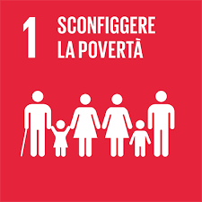

No Poverty
Eradicating extreme poverty for all people everywhere by 2030 is a pivotal aim of the Sustainable Development Goals. Extreme poverty, defined as surviving on less than US$3.00 per person per day at 2021 purchasing power parity, has witnessed remarkable declines over recent decades. However, in 2025, 808 million people – or 1 in 10 people worldwide – were living in extreme poverty, an upward revision from earlier estimates because of the updated poverty line. If current trends continue, 8.9 per cent of the world’s population will still live in extreme poverty by 2030. A shocking revelation is the resurgence of hunger levels to those last observed in 2005. Equally concerning is the persistent increase in food prices across a larger number of countries compared to the period from 2015 to 2019. This dual challenge of poverty and food security poses a critical global concern. Why is there so much poverty Poverty has many dimensions, but its causes include unemployment, social exclusion, and high vulnerability of certain populations to disasters, diseases and other phenomena which prevent them from being productive. Why should I care about other people’s economic situation? There are many reasons, but in short, because as human beings, our well- being is linked to each other. Growing inequality is detrimental to economic growth and undermines social cohesion, increasing political and social tensions and, in some circumstances, driving instability and conflicts. Why is social protection so important? Strong social protection systems are essential for mitigating the effects and preventing many people from falling into poverty. The COVID-19 pandemic had both immediate and long-term economic consequences for people across the globe – and despite the expansion of social protection during the COVID-19 crisis, 47.6 per cent of the world’s population – about 3.8 billion people – are entirely unprotected, including 1.4 billion children in 2023. In response to the cost-of-living crisis, 105 countries and territories announced almost 350 social protection measures between February 2022 and February 2023. Yet 80 per cent of these were short-term in nature, and to achieve the Goals, countries will need to implement nationally appropriate universal and sustainable social protection systems for all.